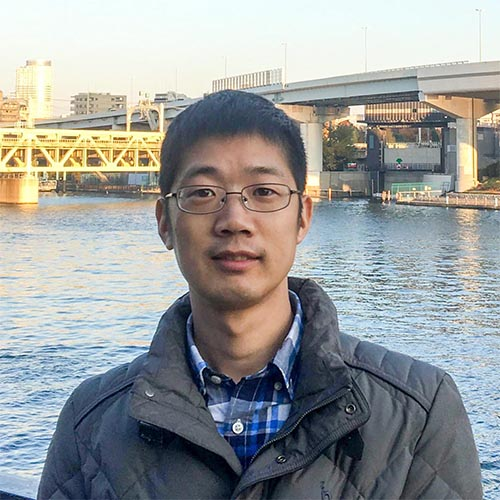
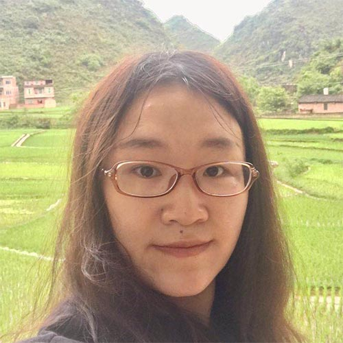
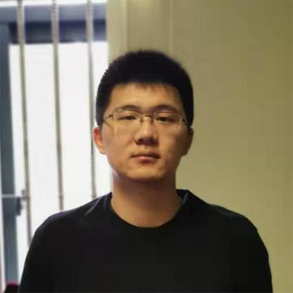
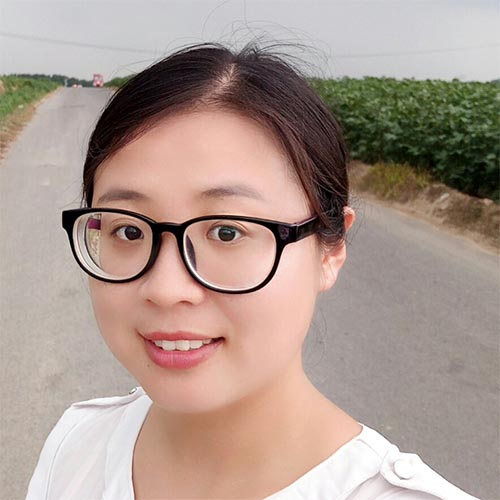
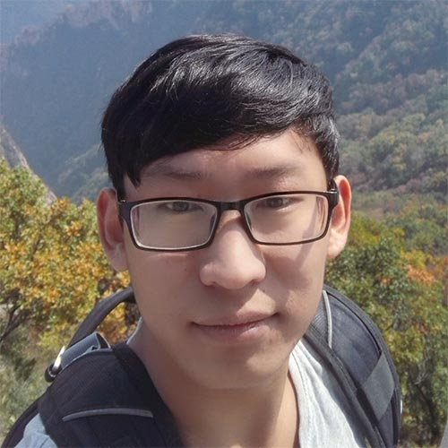
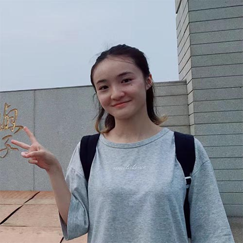
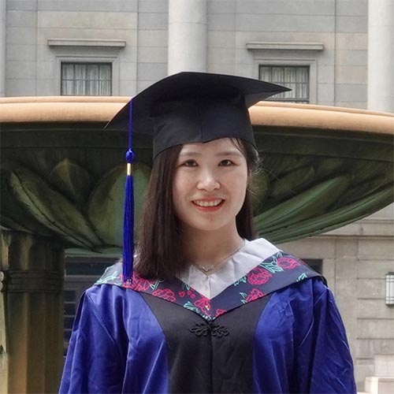
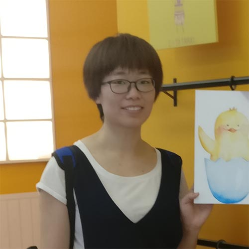

Current Members
Prof. Zhuoying Xie
Principal Investigator, Ph.D.
Zhuoying Xie obtained her Ph.D. in Biomedical Engineering from Southeast University, under the supervising of Prof. Zhongze Gu. After joining the faculty of Southeast University in 2011, he has been selected as the outstanding young backbone teacher of “Blue Project” and awarded the “Outstanding Youth Fund” of Jiangsu Province.

Ph.D. Panmiao Liu
Visitor, Join in 2012
Panmiao Liu received her Ph.D. degree from Biomedical Engineering at the Southeast Universityin 2018. Now she works as a postdoctor in Department of Anesthesiology of the First Affiliated Hospital of Zhengzhou University. Her current research interests are synthesis and assembly of nanoparticles nanomaterials.
Jialun Chen
Master Student, Join in 2016
Jialun graduated with B.S. from Southeast University in 2017, majoring in Biomedical Engineering. After that, he joins the group as a master student. His research project is developing clickable colloidal photonic crystals for structural color pattern.

Hailong Ding
Master Student, Join in 2017
Hailong raised in Haian, Jiangsu. He graduated with B.S. from Nanjing Institute of Technology in 2016. From 2017, he studies at Southeast University under the supervising of Prof. Zhuoying Xie. His research project is developing synchronous mass/fluorescence imaging system for high spatial resolution and large scale analysis.
Wenya Chang
Master Student, Join in 2018
Wenya raised in Heze, Shandong. She graduated with B.S. from China Pharmaceutical University in 2017. She joins the group in 2018, the supervising of Prof. Dawei Deng and Prof. Zhuoying Xie. Her current research interests are synthesis of novel nanoparticles for SALDI and analysis of biomarkers by MS.

Daoxue Liu
Master Student, Join in 2019
waiting for update
Alumni
Fan Xie
Master Student, Join in 2014
Fan Xie raised in Kangding, Sichuan. She graduated with B.S. from Southeast University in 2015, majoring in Biomedical Engineering. And she got Master degree in 2018, working with Prof. Zhuoying Xie on functional mesoporous materials.

Sheng Tao
Master Student, Join in 2015
Tao graduated with B.S. from Changzhou University in 2015. And he got Master degree in 2018, working with Prof. Dawei Deng and Prof. Zhuoying Xie on magnetic encoding plasmonic microbead-based suspension array for high sensitivity multiplex analysis.

Shan Chen
Master Student, Join in 2015
Shan Chen raised in Shijiazhuang, Hebei. She graduated with B.S. from Southeast University in 2016, majoring in Biomedical Engineering. And she got Master degree in 2019, working with Prof. Zhuoying Xie on photonic crystal enhanced laser desorption and ionization and detection of stress biomarkers.

Jingzhe Deng
Master Student, Join in 2016
Jingzhe Deng graduated with B.S. from China Pharmaceutical University in 2015. And she got Master degree in 2019, working with Prof. Dawei Deng and Prof. Zhuoying Xie on self-reporting colorimetric analysis of drug release by molecular imprinted structural color contact lens.